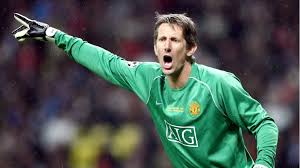
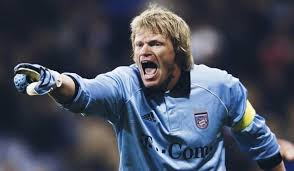
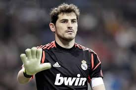
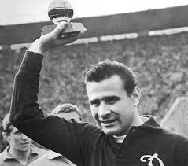

Van der Sar
🇳🇱 Países Bajos
Portero
- 🏆 Champions League (1995, 2008)
- 🔒 Récord de imbatibilidad en Premier League
- 🏟️ Ajax, Juventus, Fulham, Manchester United
"Frialdad y reflejos al servicio del arco"

Oliver Kahn
🇩🇪 Alemania
Portero
- 🥈 Balón de Oro del Mundial (2002)
- 🏆 Champions League (2001)
- 🏟️ Bayern Múnich
"El Titán del arco alemán"

Iker Casillas
🇪🇸 España
Portero
- 🏆 Campeón del Mundo (2010)
- 🏆 2x Eurocopa (2008, 2012)
- 🏟️ Real Madrid, Porto
"El Santo de España"

Lev Yashin
🇷🇺 URSS
Portero
- 🏆 Único portero con Balón de Oro (1963)
- 🧤 Apodado “La Araña Negra”
- 🏟️ Dinamo Moscú
"El mejor portero del siglo XX"